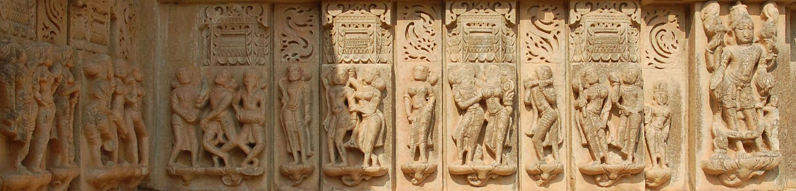

Rajasthan, the Land of Kings is synonymous to heroism, royalty and honour. Historic tales of battles fought and romance of the riches adorn the walls of the state. Established in the era marked with wartime ballads yet living in the modern period, this beautiful region is a travellers' destination. Those looking out for the remnants of the past should not pass up a trip to Rajasthan. For wanderers interested in adventures at the various landscapes should definitely get a glimpse of this venturesome state. And for the ones who plan to have a quiet sojourn gazing at the beauty of the golden sand dunes, Rajasthan tops your list. Come, explore the miscellany of the old and the new in Rajasthan, a glittering jewel of India.

The disintegration of the well spread Gupta empire marks the onset of Rajputana, a collection of several princely states of Rajasthan. The Rajputs faced sever Muslim attacks but their courage and honour for their land kept them strong. This period of evolution witnessed great leaders like Prithvi Raj Chauhan, Rana Pratap of Mewar who defied the mighty Mughal Emperor Akbar.
However, in the 18th century, the Mughal Empire faced a major fall-back as the British made their presence felt in the country. Most of the princely states continued with self-governance but at the time of Independence, Rajputana majorly comprised of 18 princely states, two chieftains and a British administered province of Ajmer-Merwara.